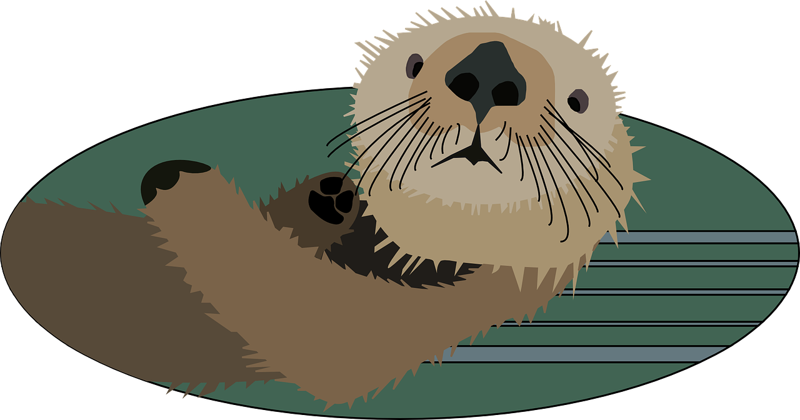

Otter schwimmen durch Bewegungen der Hinterbeine und des Schwanzes. Sie können bis zu acht Minuten unter Wasser bleiben. An Land bewegen sie sich häufig in einer Kombination von Rennen und Schlittern. Sie bevorzugen zwar als Lebensraum das Wasser, können aber, sollte es nötig sein, größere Strecken über Land zurücklegen, beispielsweise wenn sie im Winter eisfreies Wasser suchen müssen. An Land können sie Geschwindigkeiten von bis zu 29 km/h erreichen. Otter können tag- oder nachtaktiv sein, meist sind sie aber mehr nachtaktiv.
Das Capybara war bereits Carl von Linné bekannt und wurde von ihm 1766 in der 12. Auflage seines Systema Naturae innerhalb der Schweine als Sus hydrochaeris wissenschaftlich beschrieben.[8] Mathurin-Jacques Brisson stellte bereits 1762 die Gattung Hydrochoerus auf, der das Capybara mit Linnés Typus später zugeordnet wurde. Daneben existieren zahlreiche Synonyme unterschiedlicher Autoren beginnend mit Cavia capybara Pallas, 1766 bis Hydrochoerus cololoi Berro, 1968. In zahlreichen Publikationen wird die Art zudem als Hydrochoeris hydrochaeris statt Hydrochoerus hydrochaeris bezeichnet. Über den korrekten wissenschaftlichen Gattungsnamen gab es lange Zeit Kontroversen zwischen dem von Brisson 1762 geprägten Hydrochoerus und dem von Brünnich 1772 eingeführten Hydrochaeris. Beide Bezeichnungen leiten sich von den altgriechischen Wörtern üowp hydör Wasser und xoipoç choiros,Schwein' ab. Brissons Bezeichnung wurde lange Zeit abgelehnt, da sie nicht der vorgeschriebenen binomialen Nomenklatur entsprach. Die International Commission of Zoological Nomenclature (ICZN) hat aber die Bezeichnung Hydrochoerus 1998 aufgrund des langen Gebrauchs für gültig erklärt, sodass Hydrochoerus hydrochaeris die korrekte wissenschaftliche Bezeichnung darstellt.[9] Hydrochaeris ist allerdings teilweise bis heute zu finden, etwa in Wilson & Reader 2005.
Die ersten Vorfahren der Echten Katzen der Alten Welt, zu denen auch die Wildkatze (Felis silvestris) gehört erschienen vor etwa neun Millionen Jahren. Sie sind wahrscheinlich asiatischen Ursprungs und traten erstmals im Oberen Miozan mit Felis attica und Fels lunensis in Erscheinung Anschließend breiteten sich verschiedene Formen in der gesamten Alten Welt aus. Unter den verschiedenen Formen der Echten Katzen ist der Urahn der domestizierten Hauskatze die auch als Falbkatze bezeichnete afrikanische Wildkatze Felis lybica lybica [36] Dieser Vertreter der Wildkatzen ist die am wenigsten aggressive und damit am besten für das Zusammenleben mit den Menschen geeignet, so dass sie im Alten Ägypten als Heimtier gehalten wurde. Ein Team der Universitat Oxford um den Genetiker Carlos Driscoll, das die Gene von fast 1000 Hauskatzen von fünf Kontinenten untersuchte, wies nach, dass alle fünf aufgefundenen genetischen Hauptlinien allein von Felis lybica lybica abstammen und dass die Domestikation wahrscheinlich fünffach unabhängig voneinander im sogenannten Fruchtbaren Halbmond erfolgte. Von dort gelangte sie bereits im 8. Jahrtausend v Chr. nach Zypern Tatsächlich dauerte es aufgrund der morphologischen Ähnlichkeit und der nahen genetischen Verwandtschaft large, bis der Ursprung der Hauskatze gänzlich geklart werden konnte. Erste Ansätze, wie eine Abstammung von der Manul (Otocolobus manul) oder der Rohrkatze (Felis chaus) wurden von der Wissenschaft verneint Auch die Meinung, die Hauskatze sei eine Kreuzung aus Rohr- und Wildkatze, stellte sich als obsolet heraus, wenn es auch vereinzelt zu Paarungen der beiden Arten gekommen sein mag, zumal diese in der F1-Generation fruchtbar sind. Die Domestikationsforschung ging davon aus, dass die Hauskatze lediglich von einer Wildart abstammt, nämlich der Wildkatze (Felis silvestris), deren Lebensraum sich von Schottland über Afrika bis nach Asien erstreckt. So galt es als wahrscheinlich, dass Vertreter von drei Hauptgruppen der Echten Katzen (Europäische Wildkatze, Falbkatze, Steppenkatze) am Domestikationsprozess beteiligt waren. Hierbei hat die Wildkatze (Felis silvestris) ihren natürlichen Lebensraum in Europa und Kleinasien Sie ist relativ kraftig, hat kurze Ohren und einen buschigen, dicken Schwanz. Die Falbkatze (Felis lybica lybica) lebt in den Buschlandschaften und Steppen Afrikas und Arabiens. Sie hat große Chren, ist schlank und hochbeinig. Die Steppenkatze (Felis lybica omata) kommt in Vorder- und Mittelasien vor Sie ist kraftiger gebaut und untersetzter als die Falbkatze Die genetischen Merkmale der Wildkatzen sind gegenüber denen der Hauskatze dominant. Als Hauptstammform betrachtete man die Falbkatze, der zweitstärkste Einfluss wurde der Stuppenkatze zugesprochen. Die Waldkatze ist ein ausgesprochener Kulturflüchter und kam als Vorfahre am wenigsten in Frage.